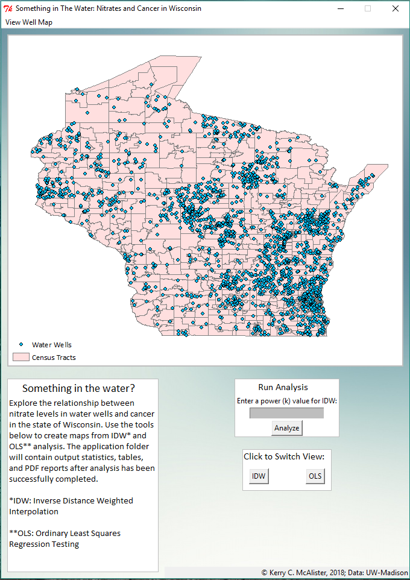

KERRY C. McALISTER
Portfolio
Here are some examples of my previous map productions.
(See below each map for a brief description)
Austin Affordability

This site was created to fulfill the requirements for my graduate practicum course at UW-Madison. The objective was to create an interactive web map allowing users to explore the issues surrounding housing affordability in Austin, TX. The web map displays median home costs, racial distribution, undeveloped lots of land, Kirwan Opportunity Index data, and current affordable housing sites. This project utilized Leaflet, a Mapbox tileset, and CARTO databases to store the data.
Bicycle Race Shaded Relief Map

This map is another project from my Graphic Design - Cartography course at UW-Madison. The objective was to create a shaded relief map for a fictional bicycle race using ArcMap and Adobe Creative Suite products. In addition to learning how to successfully manipulate elevation data for shaded relief, this project provided a fantastic opportunity for me to develop my Adobe Creative Suite skills.
Texas Population Growth
This site was created as a project for the Interactive Cartography & Geovisualization course at UW-Madison. I wanted to create an interactive map using Leaflet to display the rapid population growth taking place in Texas. The site allows the user to manipulate a temporal slider to view the population changes over 5 year increments.
World Wine Production
This map is another project from the Interactive Cartography & Geovisualization course at UW-Madison. The goal was to create an animated and interactive site utilizing D3. The page displays the top wine producing nations between 2000-2014 and provides pop-ups with production figures.
Explore Zilker
This map is another project from my Graphic Design - Cartography course at UW-Madison. The objective was to create a shaded relief map for a fictional bicycle race using ArcMap and Adobe Creative Suite products. In addition to learning how to successfully manipulate elevation data for shaded relief, this project provided a fantastic opportunity for me to develop my Adobe Creative Suite skills.
Wisconsin Water Wells
This map is another project from my Graphic Design - Cartography course at UW-Madison. The objective was to create a shaded relief map for a fictional bicycle race using ArcMap and Adobe Creative Suite products. In addition to learning how to successfully manipulate elevation data for shaded relief, this project provided a fantastic opportunity for me to develop my Adobe Creative Suite skills.
Graphic Design Web Map
This map was a project for my Graphic Design - Cartography course at the University of Wisconsin-Madison. The objective of which was to create a "slippy map" with a coherent visual design using MapBox Studio Classic & CartoCSS. This project allowed me the opportunity to better understand the creation of zoomable webmap tiles, as well as how to conceive a unique design theme from various forms of visual inspiration.
FEMA Disasters
This map is another project from my Graphic Design - Cartography course at UW-Madison. The objective was to create a shaded relief map for a fictional bicycle race using ArcMap and Adobe Creative Suite products. In addition to learning how to successfully manipulate elevation data for shaded relief, this project provided a fantastic opportunity for me to develop my Adobe Creative Suite skills.